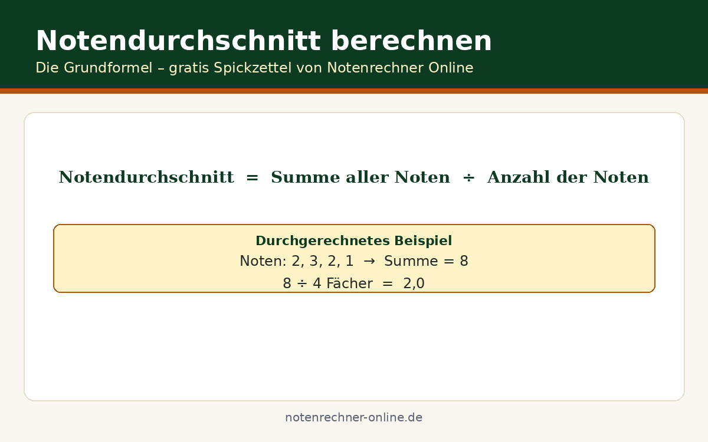

Kolleg: Das Abitur in Vollzeit nachholen
Das Kolleg ist die Vollzeit-Schule des zweiten Bildungswegs: Unterricht tagsüber, straffes Tempo, in rund drei Jahren zum Abitur. Es richtet sich an junge Erwachsene, die (noch) nicht berufstätig sind und sich voll auf die Schule konzentrieren können. Wir von Notenrechner Online erklären, wie das Kolleg funktioniert, worin es sich vom Abendgymnasium unterscheidet – und was beim Abiturschnitt am Kolleg zu beachten ist.
Kolleg oder Abendgymnasium: Der direkte Vergleich
| Kriterium | Kolleg | Abendgymnasium |
|---|---|---|
| Unterrichtszeit | Tagsüber, Vollzeit | Abends, berufsbegleitend |
| Dauer | ca. 3 Jahre | 3 bis 4 Jahre |
| Berufstätigkeit | Nicht erforderlich, meist nicht möglich | Voraussetzung |
| Alter | Oft ab 19 | Ab 18 |
| BAföG | Elternunabhängiges BAföG möglich | Eingeschränkt |
Die Faustregel: Wer tagsüber arbeiten muss oder will, gehört ans Abendgymnasium. Wer frei ist und Tempo machen will, ist am Kolleg besser aufgehoben.
Voraussetzungen und Aufbau
Auch am Kolleg brauchen Sie einen mittleren Schulabschluss und das Mindestalter – häufig 19 Jahre, weil keine Berufsausbildung verlangt wird. Der Aufbau ähnelt dem Abendgymnasium: Vorkurs oder Eingangsphase zum Auffrischen, dann Einführungsphase und zweijährige Qualifikationsphase mit anschließenden Abiturprüfungen. Der entscheidende Unterschied liegt im Takt: Vollzeit bedeutet 30+ Wochenstunden Unterricht plus Vor- und Nachbereitung – ein Pensum wie ein Vollzeitjob.
Finanzierung: Elternunabhängiges BAföG
Der große Pluspunkt des Kollegs ist die Förderung. Kollegiaten können elternunabhängiges BAföG erhalten – das Einkommen der Eltern spielt keine Rolle, und die Förderung muss nicht zurückgezahlt werden. Das macht das Kolleg für viele zur einzigen realistischen Option, weil ein Nebenjob neben dem Vollzeitpensum kaum zu schaffen ist. Beantragen Sie das BAföG frühzeitig beim zuständigen Amt für Ausbildungsförderung; die Bearbeitung dauert Wochen.
So zählt Ihr Schnitt am Kolleg
Auch hier gilt das reguläre Abitursystem: Block I aus den Kursen der Qualifikationsphase, Block II aus den Abiturprüfungen. Weil am Kolleg in Vollzeit gelernt wird, fallen die Kursnoten im Schnitt oft etwas besser aus als am Abendgymnasium – die Kehrseite ist der höhere Zeitdruck. Die genaue Rechnung mit allen Blöcken finden Sie auf unserer Seite Notenschnitt am zweiten Bildungsweg berechnen.
Stellen Sie sich vor, Ihr Block I liegt bei 380 Punkten (solide, aber nicht glänzend). Im Block II holen Sie 220 von 300 Punkten – eine starke Prüfungsleistung. Gesamt: 600 Punkte, also ein Schnitt von etwa 2,0. Hätten Sie im Block II nur 150 Punkte erreicht, wären es 530 Punkte und ein Schnitt von 2,4. Der Unterschied von 0,4 Notenstufen entscheidet oft über Zulassung oder Wartesemester. Mit dem Notenschnitt-Rechner von Notenrechner Online sehen Sie sofort, welche Prüfungsergebnisse Sie für Ihren Wunschschnitt brauchen.
Kostenlose Spickzettel & Tabellen zum Download
Wir haben die wichtigsten Formeln und Tabellen für Sie als kostenlose PDFs aufbereitet – ausdrucken, ins Heft kleben, fertig. Alle Downloads sind gratis und ohne Anmeldung.

Häufige Fragen
Kann ich neben dem Kolleg arbeiten?
Nur sehr eingeschränkt. Das Vollzeitpensum lässt kaum Raum für mehr als einen Minijob am Wochenende. Genau deshalb gibt es das elternunabhängige BAföG – nutzen Sie es.
Ist das Kolleg-Abitur weniger wert?
Nein. Es ist die allgemeine Hochschulreife wie jede andere auch und berechtigt zum Studium aller Fächer an allen Hochschulen. Arbeitgeber und Universitäten sehen dem Zeugnis nicht an, wo es erworben wurde.
Was passiert, wenn ich durch eine Prüfung falle?
Wie am regulären Gymnasium gibt es Nachprüfungs- und Wiederholungsregeln. Eine nicht bestandene Abiturprüfung kann in der Regel einmal wiederholt werden; auch die Qualifikationsphase lässt sich in vielen Fällen wiederholen. Lassen Sie sich früh von der Schule beraten.
Bin ich mit 25 zu alt fürs Kolleg?
Nein, es gibt keine Altersobergrenze. Allerdings ist das Kolleg auf jüngere Erwachsene zugeschnitten; wer mitten im Berufsleben steht und auf das Einkommen angewiesen ist, fährt mit dem Abendgymnasium meist besser.
Wie bewerbe ich mich am Kolleg?
Direkt bei der Schule, meist mit Bewerbungsfrist im Frühjahr für den Start nach den Sommerferien. Erforderlich sind Zeugnisse, Lebenslauf und Nachweise über die Voraussetzungen. Viele Kollegs führen zusätzlich ein Beratungsgespräch.
Planen Sie Ihren Schnitt: Tragen Sie Ihre Punkte ein und sehen Sie, wo Sie stehen.
Abiturpunkte berechnen